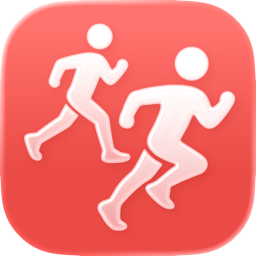
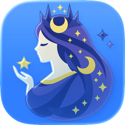

-

RunRun ランニングノート iOS
いつものアプリで走って、RunRun で振り返ろう。Apple Watch・Strava・Nike Run Club の記録をヘルスケア経由で自動同期し、美しく可視化します。
-

Clipnyx macOS
メニューバーに常駐するクリップボード履歴マネージャー。コピー履歴を自動保存し、ホットキーで瞬時にアクセスできます。
-
Seekthea iOS iPadOS macOS visionOS
ウェブ全体のトレンドを見通して、探し出すニュースアプリ。ニュース・テック・ソーシャルの話題を RSS で収集し、Apple Intelligence が AI 要約します。